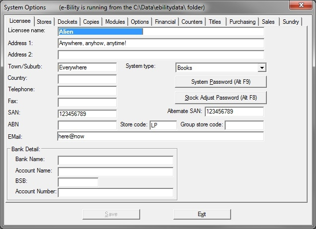

This is where your business' details are set.

These fields will appear on your various forms and reports such as the invoice form.
Notes:
Town/Suburb
The Town/Suburb field should contain your postcode and, if you wish your state.
Address 2
Address 2 can be left blank.
Country
The Country field needs to be filled in the format "Australia", "New Zealand" or "Singapore". The content of this field has implications elsewhere in the program.
ABN (Australian users) or GST No (New Zealand users)
For Australian users this is your Australian Business Number.
For New Zealand users, it is your GST number.
SAN
If you have a SAN (Standard Address Number) enter it in the SAN field.
Some users have 2 accounts with suppliers ordering on different SAN numbers. If you have a second SAN, enter it in the Alternate SAN fields.
SANs are used to uniquely identify businesses during electronic ordering and invoicing.
Store Code
For multi-store set ups, use this field for the two character code for this store.
Branch codes are set up in Tables/ Authority Tables/ Branches.
If operating as a single store, you still need a code here.
Set System Options Password (Alt F9) button
System Options contains settings that should only be changed at management level. You can set a password to restrict access to the System Options window by clicking on this button.
If you have a license for the Security module, setting a password here is unnecessary.
Set Stock Adjust Password (Alt F8) button
You can set a password to restrict doing stock adjustments by clicking on this button.
If you have a license for the Security module, setting a password here is unnecessary.
Group store code
The field is for Angus & Robinson franchisees only. They should enter their A&R five digit store code. The code will be used for sending stock availability data to the A&R web site.
Bank Details
These fields are for banking details that will display on Invoices & end of month Statements to debtors so that clients can pay by Direct Deposit to your account.